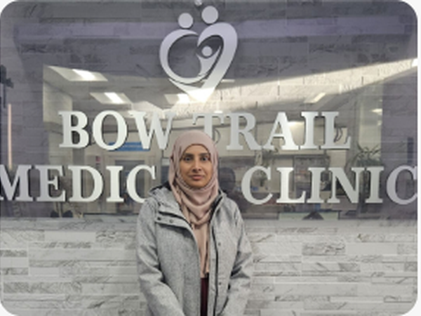

01+
Family Medicine
Primary care for individuals and families, including preventive care and ongoing health needs.
Explore family medicine →Family medicine and everyday medical care for individuals and families, with clear information to help you find the right next step.
Organized around the questions patients ask most: what care is available, who can help, and how to take the next step.
Primary care for individuals and families, including preventive care and ongoing health needs.
Explore family medicine →Non-emergency medical care when you need timely attention. Contact the clinic for current availability.
Walk-in information →Reproductive, contraceptive, prenatal, postnatal and menopause-related care in one place.
Women’s health →Medical examinations and assessments for routine, periodic and other health-related needs.
Ask about an exam →Information and assistance for medical documentation and forms where appropriate.
Contact the clinic →Additional medical services, referrals and selected procedures available through the clinic.
Explore options →
The proposed redesign makes services, doctors, new-patient information and contact options easier to find on both desktop and mobile.
Patients can move from a service overview to the information they need.
Real clinic imagery helps visitors understand the environment before they arrive.
Phone, appointment and navigation actions remain easy to reach on smaller screens.
Bow Trail Medical Clinic offers walk-in care for non-emergency medical needs. Please contact the clinic for current availability, hours and appointment requirements.


Bring women’s health information together in one easy-to-navigate destination, from reproductive and contraceptive care to prenatal, postnatal and menopause support.
Explore the clinic team and learn more about the professionals who support patients across family medicine and related services.

PHYSICIANTeam names and credentials shown here are based on the supplied clinic materials and should be verified with the clinic before production.
Learn about becoming a patient, current physician availability and what to know before your first appointment.

Bow Trail Medical Clinic provides a range of medical services from its Calgary location. The proposed website experience is designed to make the clinic’s services, physicians and patient information easier to understand and access.

For appointments, walk-in information and current patient availability, contact Bow Trail Medical Clinic directly.

Connect this section to the clinic’s confirmed booking and contact options in the production website.
Call the Clinic → Email the Clinic → Demo only — no patient information is collected here.